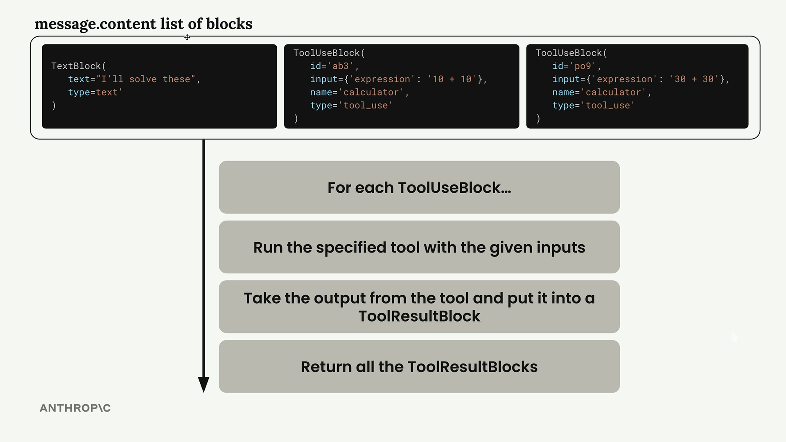
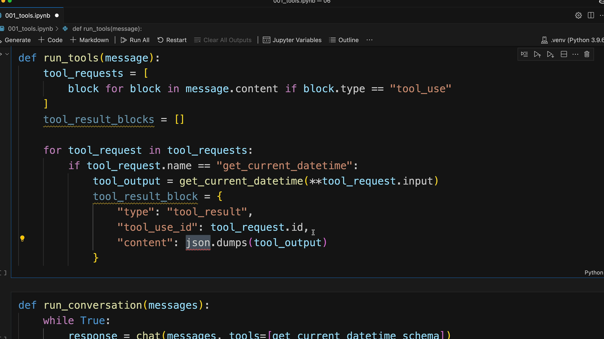

Реализация цикла
Чему научитесь
Видео 16:25 и текст урока
К концу урока вы сможете:
- определять запрос инструмента по
stop_reason; - выполнять все вызовы из ответа и возвращать результаты с совпадающими ID;
- обрабатывать ошибки инструментов и маршрутизировать вызовы по имени.
Видео и текст урока.
Смотреть урок на Skilljar Implementing multiple turns · 16:25Разговорная система с инструментами строится вокруг цикла, который вызывает Claude, пока тот запрашивает инструменты. Когда Claude больше не просит инструментов, значит, у него готов итоговый ответ для пользователя.
Как понять, что нужен инструмент
Ключ к тому, хочет ли Claude вызвать инструмент, — поле stop_reason ответа. Когда Claude решает, что ему нужен инструмент, это поле равно "tool_use". Это даёт простой способ понять, нужно ли продолжать цикл:
if response.stop_reason != "tool_use":
break # Claude is done, no more tools needed
Цикл разговора
Основная функция разговора устроена просто:
def run_conversation(messages):
while True:
response = chat(messages, tools=[get_current_datetime_schema])
add_assistant_message(messages, response)
print(text_from_message(response))
if response.stop_reason != "tool_use":
break
tool_results = run_tools(response)
add_user_message(messages, tool_results)
return messages
Цикл продолжается, пока Claude не даст итоговый ответ без запроса инструментов.
Несколько вызовов в одном ответе
Claude может запросить несколько инструментов в одном ответе. content сообщения — список блоков, и каждый блок вызова инструмента нужно обработать отдельно:

message.content: блок текста и два блока tool_use (10 + 10 и 30 + 30); на каждый отвечает свой блок tool_result.Функция run_tools отбирает блоки вызова инструментов и обрабатывает каждый:
def run_tools(message):
tool_requests = [
block for block in message.content if block.type == "tool_use"
]
tool_result_blocks = []
for tool_request in tool_requests:
# Process each tool request...
Блоки результатов
На каждый блок вызова инструмента нужно ответить своим блоком результата. Связь между ними держится на совпадающих ID:

run_tools вызывает get_current_datetime, если имя совпало, и собирает блок результата.Структура блока результата:
tool_result_block = {
"type": "tool_result",
"tool_use_id": tool_request.id,
"content": json.dumps(tool_output),
"is_error": False
}
Обработка ошибок
Надёжное выполнение инструментов требует обработки возможных ошибок. Даже если инструмент упал, Claude всё равно нужно вернуть блок результата:
try:
tool_output = run_tool(tool_request.name, tool_request.input)
tool_result_block = {
"type": "tool_result",
"tool_use_id": tool_request.id,
"content": json.dumps(tool_output),
"is_error": False
}
except Exception as e:
tool_result_block = {
"type": "tool_result",
"tool_use_id": tool_request.id,
"content": f"Error: {e}",
"is_error": True
}
Маршрутизация инструментов
Чтобы поддерживать несколько инструментов, сделайте функцию-маршрутизатор, которая сопоставляет имена инструментов с их реализациями:
def run_tool(tool_name, tool_input):
if tool_name == "get_current_datetime":
return get_current_datetime(**tool_input)
elif tool_name == "another_tool":
return another_tool(**tool_input)
# Add more tools as needed
Так легко добавлять новые инструменты, не трогая основную логику разговора.
Полный цикл
Многоходовый разговор целиком работает так:
- отправить сообщение пользователя Claude с доступными инструментами;
- Claude отвечает текстом и/или запросами инструментов;
- выполнить все запрошенные инструменты и собрать блоки результатов;
- отправить результаты обратно сообщением пользователя;
- повторять, пока Claude не даст итоговый ответ.
Получается связный сценарий, в котором Claude может использовать несколько инструментов за несколько ходов, чтобы полностью ответить на сложный запрос. История разговора сохраняет весь контекст, и Claude может опираться на прошлые результаты инструментов.
Дальше
Инфраструктура готова — следующий урок подключает остальные инструменты проекта.
Оригинал урока: Implementing multiple turns.